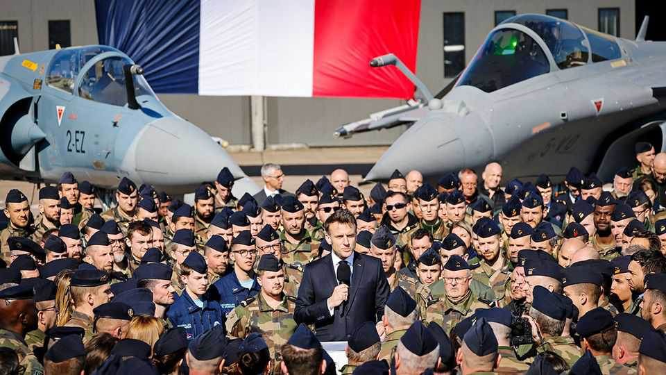
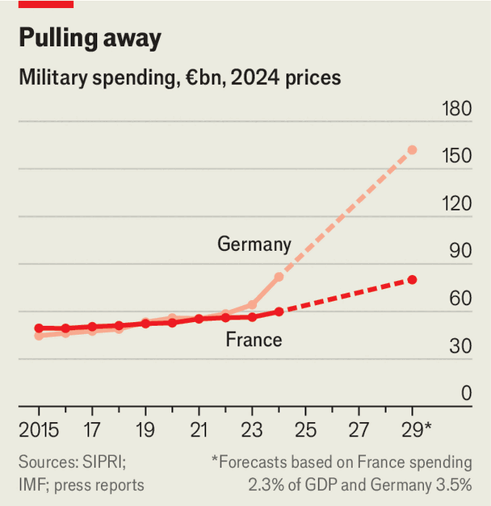

Europe | Flying on empty

POLITICIANS hate to admit when their pet projects are unravelling. So it is not surprising that on February 9th Emmanuel Macron, France’s president, rejected reports that a European effort to build a sixth-generation fighter jet is near collapse. The Future Combat Air System (FCAS), which he conceived in 2017 with Angela Merkel, then Germany’s chancellor, had an expected price-tag in the high tens of billions of dollars. It has only become more urgent amid threats from Russia and fears of American abandonment. Europe’s rising defence budgets ought to make it easier. But for months it has been likened to a dead man walking. Mr Macron plans to talk to Germany’s chancellor, Friedrich Merz, in hopes of restoring it to life.
The FCAS project was hailed as Europe’s opportunity to boost its air power after failing to develop a rival to America’s fifth-generation F-35. It involves more than the fighter jet itself, intended to replace France’s Rafale and the Eurofighter Typhoon flown by Germany and Spain (which joined in 2019). FCAS also aims to develop a swarm of autonomous drones to support the fighter and a communications “combat cloud” linking all its elements.
It was always going to be difficult for three big countries to work together on such a complex system. But what is killing FCAS is a form of dysfunctional collaboration between firms that has doomed several European defence projects in the past (see chart). Sebastian Laiseca Segura, a former director of FCAS at Indra, the consortium’s Spanish partner, says it is not just the fighter programme that is in trouble. Three other joint projects over the past five years are all, he says, essentially write-offs.

Last October France pulled out of a €7bn ($8.3bn) drone programme involving Airbus, Dassault and Italy’s Leonardo. Franco-German squabbling has left a plan for a new tank years behind schedule. Another Franco-German project to produce a marine patrol aircraft fell apart in 2021 when Germany selected an American plane instead.
FCAS is hobbled in part by disputes over work share. The idea was for Dassault, which built the Rafale, to take the lead on the jet. Airbus (which had been a partner in the Typhoon) had the main responsibility for the combat cloud and its remote carriers. Indra would focus on sensors.
But the French and Germans disagree on how to work together. “I will not accept three people round a table deciding on all the technical aspects,” said Eric Trappier, Dassault’s boss, in September. Dassault thinks the leaders should call the shots, while the Germans want to use the project to develop capabilities. But Dassault sees no obligation to surrender its intellectual property to Airbus. An insider says other big French firms involved in FCAS are behaving similarly.
The Germans are ready to walk. The only thing keeping FCAS limping along is that neither Mr Macron nor Mr Merz has worked out how to cancel it while saving face. Despite what Mr Macron says, Dassault will probably go its own way. The only part to survive may be the “combat cloud”, as a discrete project.
With Germany nearly doubling its defence budget over the next three years, Airbus could go it alone, says Ben Schreer of the International Institute for Strategic Studies, a think-tank. It wants a heavier fighter than the one conceived by Dassault, which wants one that can operate from an aircraft-carrier. Airbus might also partner with Sweden’s Saab, maker of the Gripen fighter, whose interest in joining a rival British-Italian-Japanese project has cooled. For all the talk of reducing industry fragmentation, Europe could end up with four different sixth-generation fighters.
Two other crucial European joint projects are in better shape. The European Long-Range Strike Approach (ELSA), launched in 2024, is developing ballistic and cruise missiles. It has seven partners: France, Germany, Italy, the Netherlands, Poland, Sweden and Britain. The European Sky Shield Initiative (ESSI), which began in 2022, is a German-led procurement scheme for air-defence systems which over 20 countries have joined.
Neither is as ambitious as FCAS. ELSA is a loose coalition that will encourage programmes between two or three partners at a time. Thus France, Italy and Britain are developing a stealthy cruise missile, while Germany is building a more powerful version of its Taurus missile with Sweden.
ESSI is different again. It will source off-the-shelf kit for the purposes it has identified: European systems for short and medium-range roles; American Patriot and Israeli Arrow interceptors for long-range capabilities. France has not joined, saying Europe should not rely on American systems even if building its own takes longer. But Mr Schreer says pooling resources to buy available systems is preferable to complex joint schemes to develop new ones.
Camille Grand of ASD, Europe’s aerospace, security and defence industry trade organisation, says that counterintuitively, rapidly growing defence budgets in some countries may reduce the pressure and make collaboration less likely than when money was tighter. “They can weigh the benefits of a national strategy against the complexity of co-operation,” he notes.
For years France has taken Europe’s most nationalistic approach to military procurement. But soon Germany may be spending twice as much as France does on defence. The German refusal to be the junior partner in FCAS reflects that new financial muscle. “The question,” says Mr Grand, “is how much co-operation is desirable, and in what framework?” ■
To stay on top of the biggest European stories, sign up to Café Europa, our weekly subscriber-only newsletter.